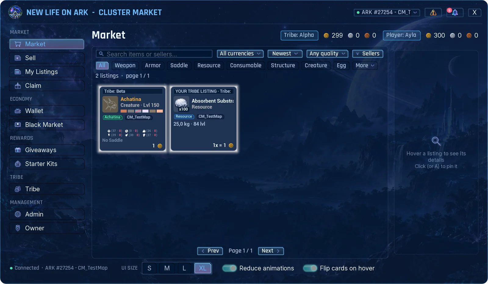
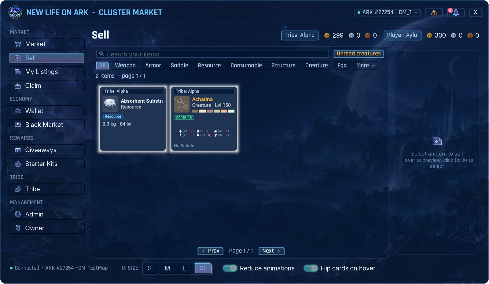
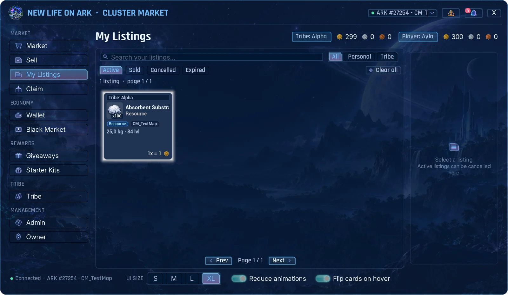
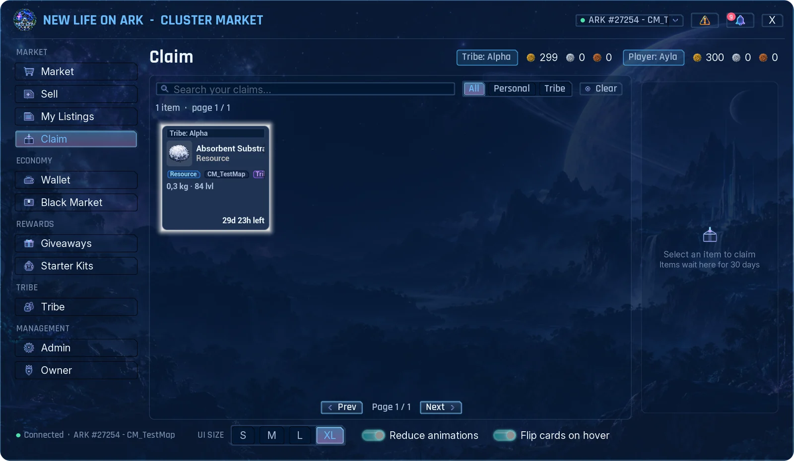
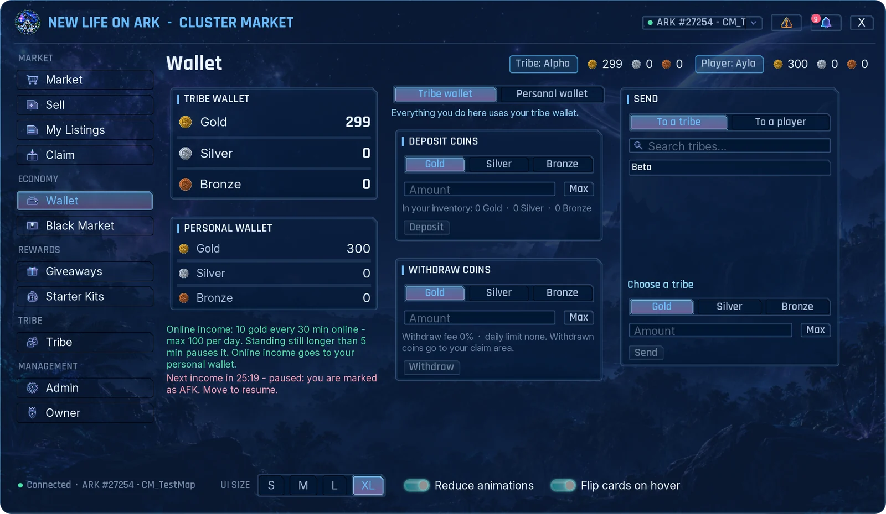
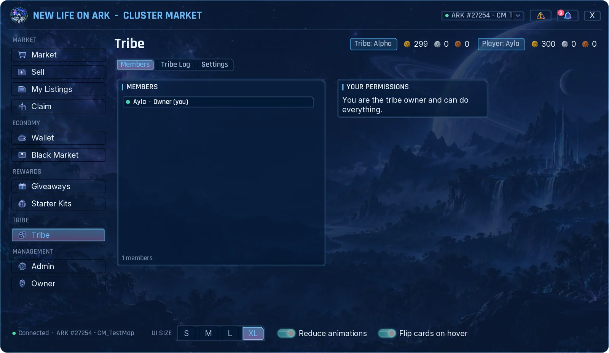

Open the market
- Hold your radial wheel key (the same wheel you use for emotes and whistles).
- Pick the Cluster Market entry.
You need to be in a tribe. A tribe of one is fine. Without a tribe you see a short notice instead of the market.
If the server owner has frozen the market you can still open it and take your items from Claim, but buying and selling are paused. The reason is shown in a red line at the top.
The window
- Menu on the left: Market, Sell, My Listings, Claim, Wallet, Black Market, Giveaways, Starter Kits and Tribe.
- Top bar: your tribe's balances and your own balances, one number per currency.
- Bell: your notifications. A number shows how many are unread.
- Warning sign: things you should know about, for example items that will soon be removed from Claim.
- Bottom bar: interface size (S, M, L, XL), Reduce animations and Flip cards on hover. These are your own settings.
Buy


- Open Market. Use the search box, the category row, and the currency, sort, quality and seller filters to find what you want.
- Hover a card to preview it. Click it to pin its details on the right.
- For a stack, choose the quantity. You can buy only part of a stack.
- Choose Pay from: your personal wallet or the tribe wallet.
- Press Buy and confirm.
What you buy never drops straight into your inventory. It waits in Claim.
You cannot buy your own listing or a listing of your own tribe. Those cards are marked YOUR LISTING or YOUR TRIBE LISTING.
Reading a creature card
Creatures are sold inside cryopods. The card shows the species, level and gender, the six colour regions, maternal and paternal mutations, and the points in each stat. The details panel adds traits, the saddle and the full stat list.
Sell


- Open Sell. It shows the items in your inventory that can be listed.
- Click the item.
- Set the quantity, the price for one piece and the currency.
- Choose List as: personal (the money goes to your wallet) or tribe (the money goes to the tribe wallet).
- Check the summary: listing fee, sales tax and what you receive. Press List and confirm.
The item leaves your inventory when it is listed. If it does not sell before the listing ends, it comes back to Claim.
- Some items cannot be listed: currency coins, items the admins have banned, and items that cannot leave your inventory.
- Admins can set a lowest and highest price for an item. The form shows the allowed range.
- A cryopod marked LEVELS NOT READ holds a creature that was stored before the mod was installed. Click it and press Read creature levels once, then it can be listed.
My Listings


Your listings and your tribe's listings, in four tabs: Active, Sold, Cancelled and Expired.
To take a listing down, click it and press Cancel. The item goes to Claim. Cancelling a tribe listing needs the Cancel permission in your tribe.
Claim


Everything you receive waits here: purchases, cancelled and expired listings, rewards, admin gifts and withdrawn coins.
- Open Claim.
- Click the item and press Claim.
- Items wait for a limited time, 30 days unless your server changed it. The card shows the time left, and you get a warning before the end.
- If your inventory is full the item stays in Claim.
- Tribe items can be claimed by tribe members with the Claim permission. Personal items only by you.
Wallet


You have two wallets: the tribe wallet, shared with your tribe, and your personal wallet. Pick one at the top of the right side; the boxes below work on the wallet you picked.
- Deposit coins: turn coin items from your inventory into wallet balance.
- Withdraw coins: turn balance back into coin items. They arrive in Claim. Your server may take a fee or set a daily limit.
- Exchange: swap one currency for another, if your server has set a rate.
- Send: send currency to another tribe or player.
Some servers pay online income for time you spend actively playing. The Wallet page shows the amount and a countdown to the next payment. If you stand still for too long the income pauses and a notice tells you to move.
Using the tribe wallet needs permission from your tribe owner. Depositing is always allowed.
Tribe


- Members: who is in the tribe, their role and whether they are online. Your own permissions are listed on the right.
- Tribe Log: who bought, sold, claimed or moved money, with filters and search.
- Settings: the tribe owner decides what each member may do with tribe money and items: Spend, List, Cancel, Withdraw, Exchange, Transfer, Claim, View log and Manage permissions.
New members start with the tribe's default permissions. Personal wallet, personal listings and personal claims never need a permission.
Black Market, Giveaways and Starter Kits
These pages are filled by your server's admins.
- Black Market: special offers at a fixed price. Stock can be limited and the offers can change on a timer.
- Giveaways: rewards that are free, cost currency, or ask you to hand in items. For a hand-in giveaway you can bring the items in several visits; the page shows your progress.
- Starter Kits: kits you can take once, or again after a waiting time. Some need a minimum level.
Everything you take from these pages goes to Claim.
If you leave your tribe
- Your personal listings are cancelled and the items go to your personal Claim.
- Your personal wallet stays yours.
- While you have no tribe, a box on your screen reminds you that items are waiting. Join or create a tribe, open the market, and claim them.
- If a tribe is disbanded, its wallet, listings and waiting items go to the last tribe owner.
Gamepad
- Move with the left stick or the D-pad, confirm with A, close with B.
- LB and RB switch between pages.
- The right stick scrolls. Y flips an item card to show its back side.